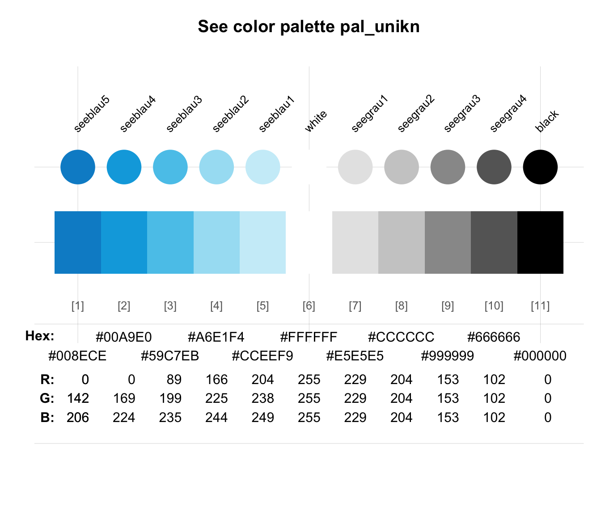

pal_unikn combines the 5 blue colors
from color palette pal_seeblau
with the 6 non-blue colors of pal_unikn
to a palette containing 11 color values.
pal_unikn
An object of class data.frame with 1 rows and 11 columns.
Adding seeblau5 (i.e., pal_seeblau[1]) to
the default color palette pal_unikn
also puts white at the central (middle)
position of a palette with 11 values:
pal_unikn[[6]] is white or "#FFFFFF".
This is useful when creating color gradients.
See https://www.uni-konstanz.de/en/university/news-and-media/create-online-and-print-media/corporate-design/ for details.
pal_unikn for the default uni.kn color palette;
pal_seeblau for the uni.kn seeblau color palette;
seecol to show color palettes;
usecol to use color palettes.
Other color palettes:
pal_bordeaux,
pal_grau,
pal_karpfenblau,
pal_peach,
pal_petrol,
pal_pinky,
pal_seeblau,
pal_seegruen,
pal_signal,
pal_unikn_dark,
pal_unikn_light,
pal_unikn_pair,
pal_unikn_ppt,
pal_unikn_pref,
pal_unikn_web
pal_unikn#> seeblau5 seeblau4 seeblau3 seeblau2 seeblau1 white seegrau1 seegrau2 #> 1 #008ECE #00A9E0 #59C7EB #A6E1F4 #CCEEF9 #FFFFFF #E5E5E5 #CCCCCC #> seegrau3 seegrau4 black #> 1 #999999 #666666 #000000#> [1] 1 11# Access by position: pal_unikn[1] # new color "seeblau5" (as df)#> seeblau5 #> 1 #008ECEpal_unikn[[1]] # new color value "#008ECE"#> [1] "#008ECE"# Access by name: pal_unikn["seeblau5"] # new color "seeblau5" (as df)#> seeblau5 #> 1 #008ECEpal_unikn[["seeblau5"]] # new color value "#008ECE"#> [1] "#008ECE"# Note: pal_unikn[6] # "white" or "#FFFFFF" as central of 11 colors#> white #> 1 #FFFFFF